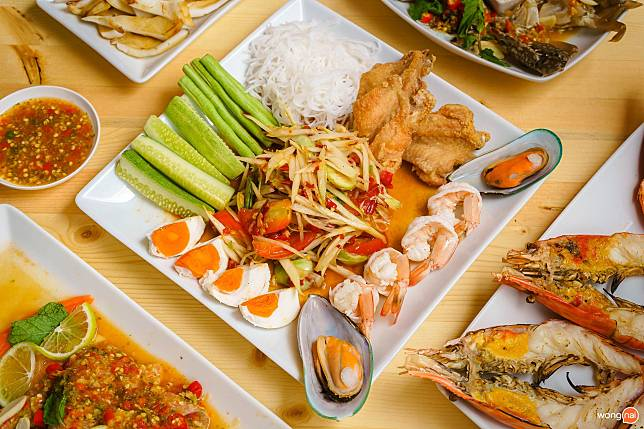
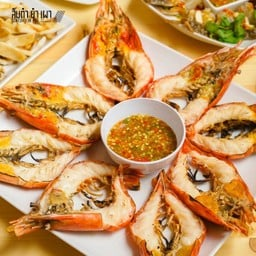

ส้มตำ ยำ เผา ภูเก็ต
ส้มตำ
ส้มตำเป็นอาหารที่มีรสชาติสดชื่นด้วยความเปรี้ยวหวานและเผ็ด พร้อมกับมะละกอสุกกรอบและถั่วลิสงคั่ว ส้มตำที่ภูเก็ตมีการปรับสูตรให้มีความพิเศษ เช่น การเพิ่มกุ้งสดหรือปูเค็มที่ช่วยเพิ่มรสชาติอันโดดเด่นให้กับจานนี้
ยำ

ยำในภูเก็ตมีหลายแบบ ไม่ว่าจะเป็นยำกุ้งสดหรือยำทะเล ซึ่งเป็นจานที่มีความหลากหลาย รสชาติเปรี้ยวแซ่บที่เกิดจากน้ำยำทำให้ผู้กินรู้สึกตื่นเต้นทุกครั้งที่ได้ลิ้มลอง เป็นอาหารที่เหมาะสำหรับการแบ่งปันในงานเลี้ยงหรือการเฉลิมฉลองต่างๆ
อาหารเผา
อาหารเผาหมายถึงการย่างที่สร้างความอร่อยจากการรมควันและกลิ่นหอมของถ่าน อาหารที่นิยมเผาได้แก่ เนื้อหมู เนื้อไก่ หรือซีฟู้ด ที่ถูกปรุงอย่างพิถีพิถันและเสิร์ฟพร้อมน้ำจิ้มรสเด็ด เป็นเมนูที่คนภูเก็ตชื่นชอบมาก